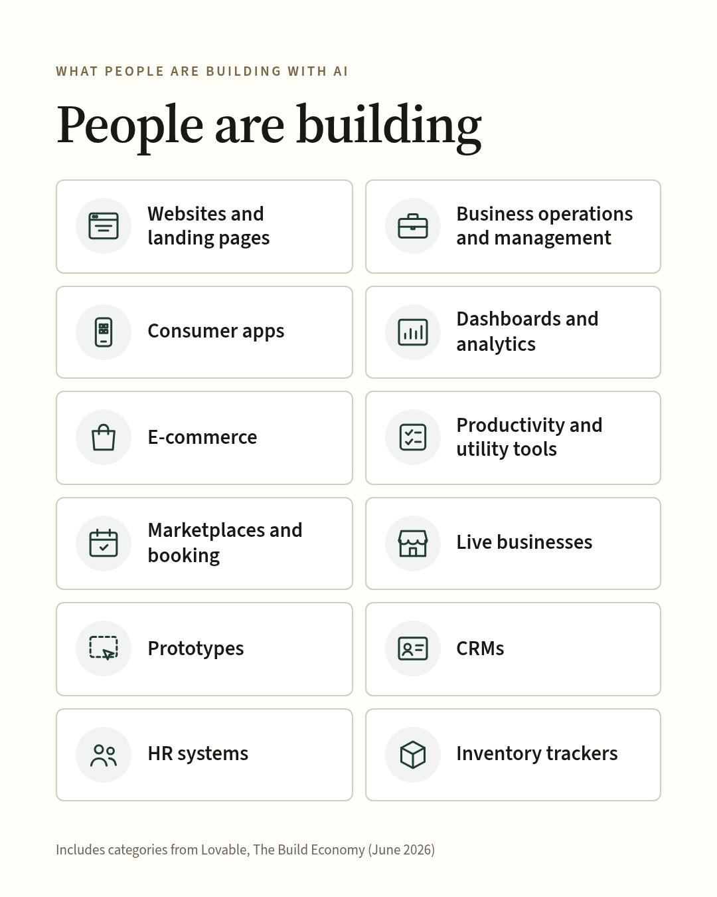
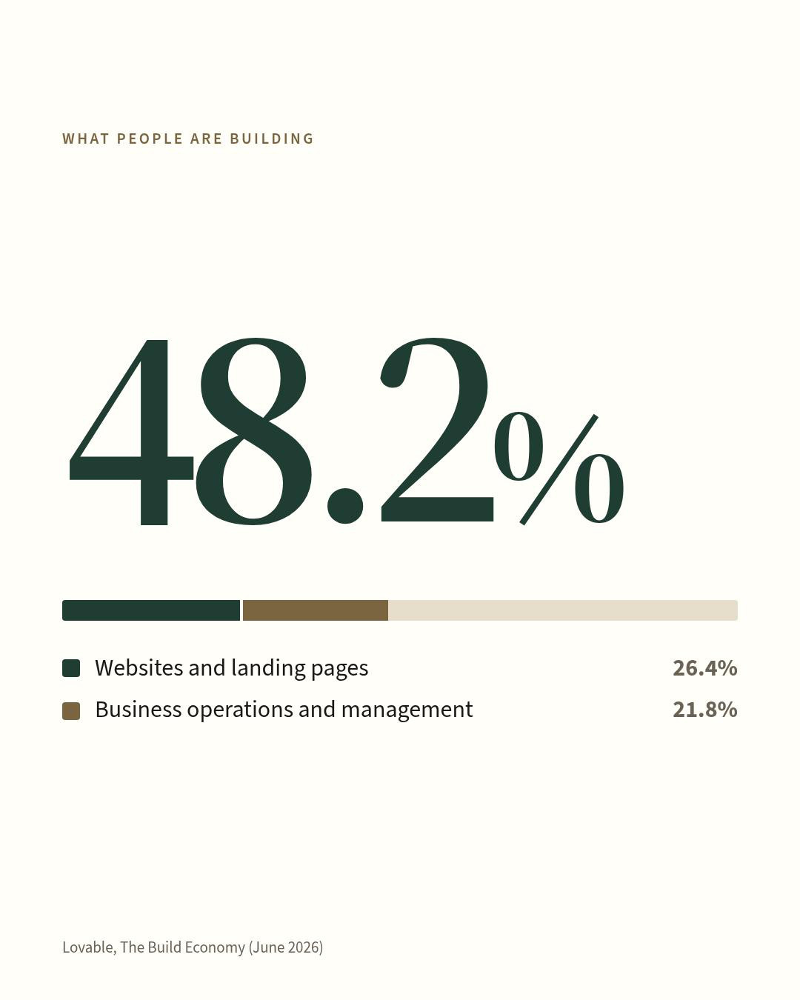

What are people building with AI, and how can it help them save money?

People are building live businesses, prototypes, landing pages, and internal tools such as CRMs, HR systems, inventory trackers, and dashboards.
Lovable's 2026 data study puts it plainly: the software coming out of Lovable “is practical and industry-specific. It spans SaaS products, restaurant websites, clinical tools, custom CRMs and HR platforms, e-commerce stores, and internal dashboards.”
What people are building, per the study’s data:
- Websites and landing pages (26.4%)
- Business operations and management (21.8%)
- Consumer apps (11.8%)
- Dashboards and analytics (9.1%)
- E-commerce (7%)
- Productivity and utility tools (6.2%)
- Marketplaces and booking (5.4%)
- AI and chatbots (4.5%)
- Other categories (7.8% combined)

AI can help businesses save money by building tools that fit how their teams actually work and by rethinking what they pay for. It has changed what businesses can build, but it hasn't lowered the standard for building well, so it can pay to use it wisely and creatively.
Before building, weigh return on investment, risk, and safeguards such as security, data privacy, and any existing contract terms. For return on investment, gather current costs, renewal dates, license counts, and usage data, and estimate the time to develop and maintain. Then start small to prove the idea out.
How will you measure success? Is the goal revenue, lower costs, or time back? Which tools could be simplified, replaced (where it makes sense), or consolidated? What problem needs solving first?
I've generated over 100,000 lines of code across a few languages with AI and turned many individual ideas into working projects. I've used AI since 2022 (back in the DALL-E 2 days) and build with it every day.
I can evaluate software needs, help you decide whether to build or buy, and create custom tools where they fit better than traditional SaaS, or consolidate tools for potential cost savings. I stay close to the problem and can go line by line through your financials or workflows to find opportunities. For internal tools, I can assess and prototype options with a short turnaround, with a testing and feedback round built in.
I'm happy to support you on this as a standalone project or as part of fractional AI lead work, and I'd like to hear about your goals, challenges, and project ideas. Book a free 20-minute call: https://aiauditdesk.github.io/contact.html
Source:
Lovable, The Build Economy (June 2026): https://thebuildeconomy.lovable.app/